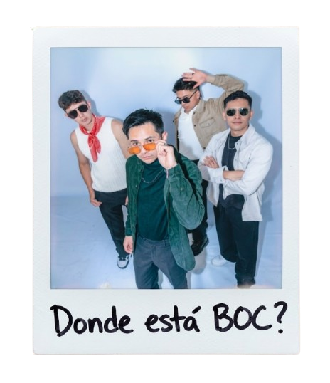

Indie · Rock · Funk · Alternativo
¿Dónde está BOC?
Una banda mexicana que mezcla guitarras, groove y canciones para sentir en vivo.
Ya puedes escuchar «Voy a enloquecer» y «Al Final».


Sobre el proyecto
BOC existe.
Cuatro integrantes, canciones emocionales y un sonido que cruza el pop rock, el funk y el disco.
¿Dónde está BOC? nació del encuentro de cuatro músicos en Puebla. Sus grooves y guitarras llevan esas canciones al escenario con una energía directa y bailable.
Integrantes
Discografía
La música
Dos canciones para empezar a encontrarnos. Escúchalas en los perfiles oficiales de la banda.
- 01Voy a enloquecer
- 02Al Final
En vivo
Próximo show
Ben Gurión
Estamos preparando este concierto. Anunciaremos la fecha y los boletos cuando estén confirmados.
Fecha por anunciar
Booking · Prensa · Colaboraciones
Hablemos.
¿Quieres a BOC en un foro, festival o evento? Escríbenos por nuestro perfil oficial. De momento, este es el canal de contacto disponible.
Cuéntanos quién eres, qué propones y cómo podemos responderte.
Escribir por Instagram